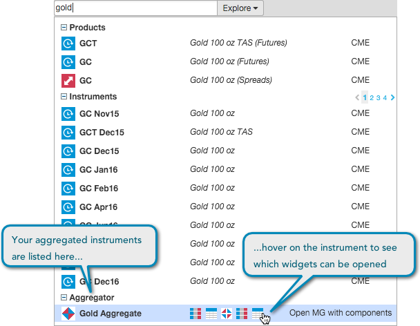

To create an aggregated instrument:
Click Save.
After creating and launching an aggregated instrument, it is available to trade as a product in the Market Explorer. Use the Search box or click Explore in the title bar to find aggregated instruments.
